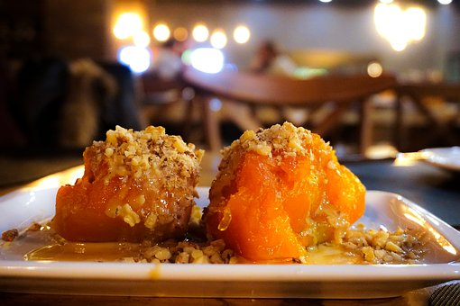

Kabak tatlısı tarifi, kışın en çok aranan tarifler arasında neredeyse ilk sıralarda yer alıyor. Ülkemizde de çok sevilen bu tatlının tarifine bakalım şimdi..

Kabak tatlısı
Malzemeler
- 1 kilo bal kabağı
- 1,5 su bardağı toz şeker
- Dövülmüş ceviz
Nasıl yapılır?
- Kabağın kabuklarını soyup, çekirdeklerini sıyırıp istediğimiz boyutta dilimliyoruz.
Tencereye alıyoruz.
- Üzerine 1,5 su bardağı toz şekeri döküyoruz.
- En kısık ateşte tencerenin kapağını kapatıp yumuşayana kadar pişiriyoruz. (Benim tatlım 1 saat 10 dakikada pişti.)
- Kabak su saldığı için pişince kaşıkla çıkarıp servis tabağına alıyoruz.
- Soğuyunca üzerine iri çekilmiş ceviz içi serpip servis ediyoruz.
AFİYET OLSUN